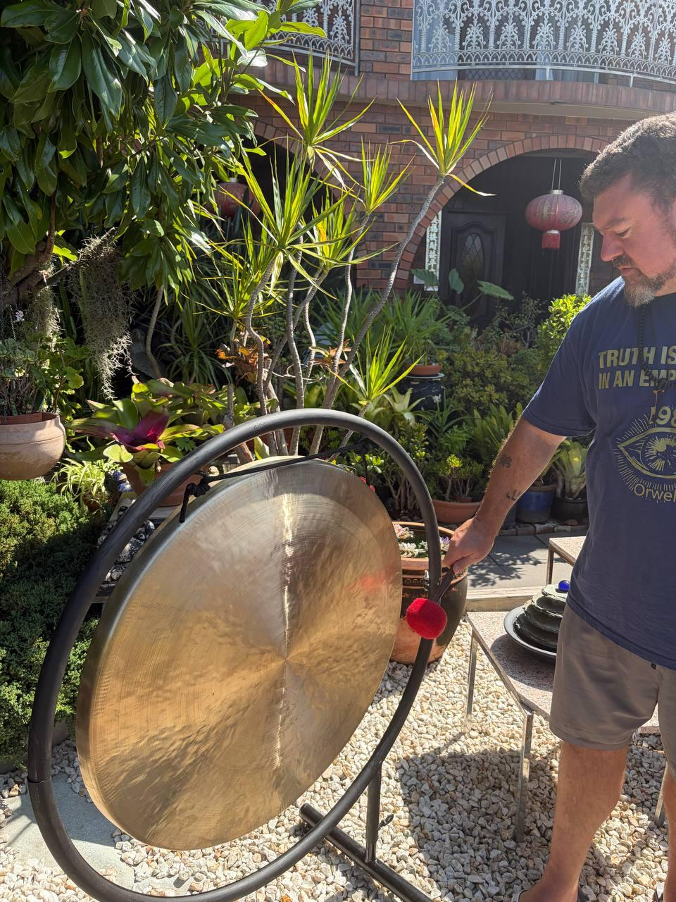
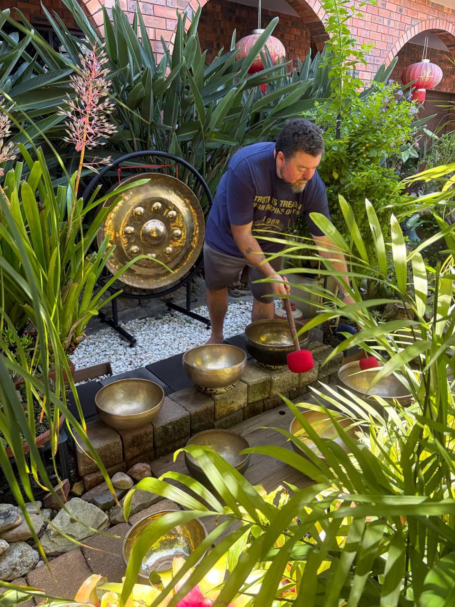
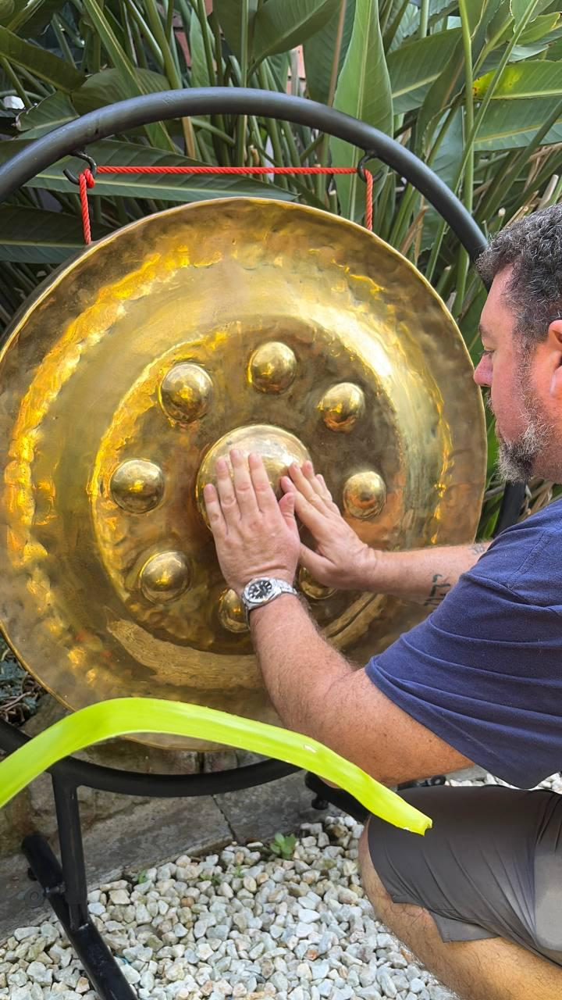

So you've decided to try a sound bath. Maybe a friend recommended it, or you've seen it on social media, or you're simply curious about this ancient practice that's gaining modern popularity. Whatever brought you here, welcome. Here's everything you need to know.

Setting up for a sound healing session—instruments ready to welcome you
What Actually Happens in a Sound Bath?
First, let's clear up what a sound bath is (and isn't). You won't get wet. There's no actual bathing involved. The "bath" refers to being immersed in sound—waves of vibration that wash over and through you.
During a typical session:
- You'll lie down on a comfortable mat, often with blankets and pillows
- The practitioner plays various instruments—singing bowls, gongs, chimes, and more
- Sessions typically last 45-90 minutes
- Your only job is to relax and receive
That's it. No poses to hold, no mantras to remember, no special breathing techniques (unless you want them). Just you and the sound.
Before You Arrive
What to Wear
Comfort is king. Wear loose, comfortable clothing that won't restrict your breathing or movement. Yoga clothes work well, but so do trackpants and a soft t-shirt. Avoid anything tight around your waist or chest.
Layers are wise—your body temperature may fluctuate during deep relaxation. Bring a jumper or extra blanket if you tend to get cold.
What to Eat (and Not Eat)
Don't arrive on a full stomach. A heavy meal right before can make lying down uncomfortable and may prevent you from relaxing fully. Equally, don't come starving—hunger can be distracting.
Ideal: eat a light meal 2-3 hours before your session.
Also consider reducing caffeine that day. While not required, many people find the experience deeper when their nervous system isn't stimulated by coffee.
Arrive Early
Give yourself time to settle. Rushing in at the last minute with stress hormones pumping defeats the purpose. Arrive 10-15 minutes early to find your spot, use the bathroom, and let your nervous system begin to calm.

Multiple singing bowls create layers of harmonic frequencies
During the Session
Find Your Position
Most people lie on their back (savasana position), but this isn't mandatory. If you have back issues, you might lie on your side or even sit supported against a wall. The goal is to be comfortable enough to stay still for the duration.
Eyes Open or Closed?
Most people close their eyes, but it's not required. Some people like to watch. Others close their eyes initially, then open them at times. There's no wrong way.
What If I Fall Asleep?
This is one of the most common questions, and here's the answer: it's completely fine. Many people drift in and out of sleep states during sound baths. Your body is still receiving the benefits, even if your conscious mind checks out.
Some practitioners say the sound works more deeply when we're not trying to "do" anything with it—including stay awake.
What If I Feel Emotional?
Also normal. Sound can unlock emotions that have been stored in the body. If you feel tears coming, let them flow. If you feel like laughing, laugh. If you feel nothing special, that's fine too. Every experience is valid.
After the Session
When the sound stops, take your time. Don't jump up immediately. Let yourself return slowly. Wiggle your fingers and toes, take some deep breaths, and only sit up when you feel ready.
After a deep sound bath, you might feel:
- Deeply relaxed, almost "floaty"
- Emotional or tender
- Energised and clear
- Tired and ready for early bed
- Thirsty (drink plenty of water)
Avoid scheduling anything demanding immediately after. Give yourself at least 30 minutes to integrate before driving or making important decisions.
The Most Important Tip
Release expectations. Your experience will be unique to you, and it may be different from what you've read or heard. Some people have profound mystical experiences their first time. Others simply feel relaxed. Both are valid. Both are beneficial.
The sound meets you where you are. Trust the process, trust your body, and let whatever happens, happen.

The instruments are played with intention for your healing
Ready to Begin?
You now know more than most first-timers. But remember: all the preparation in the world matters less than simply showing up with an open heart. The sound will do the rest.
See you on the mat.
Frequently Asked Questions
What should I wear to a sound bath?
Wear loose, comfortable clothing that won't restrict your breathing. Yoga clothes, trackpants, or soft casual wear all work well. Bring layers as your body temperature may fluctuate during relaxation.
Can I fall asleep during a sound bath?
Yes, falling asleep is completely normal and fine. Many people drift in and out of sleep states. Your body still receives the benefits even when your conscious mind rests.
How much does a sound bath cost in Sydney?
Group sound bath sessions in Sydney typically range from $30-$80 per person. At Luke Collins Sound Healing, group sessions start at $50, with a couples rate of $80 for two people.
How long does a sound bath last?
Most sound bath sessions last between 45-90 minutes. At Luke Collins Sound Healing, group sessions are typically 60 minutes, while private sessions can be tailored to your needs.
Is sound healing safe for everyone?
Sound healing is generally safe for most people. However, if you have a pacemaker, are pregnant, have epilepsy, or have sound-sensitive conditions, please consult your doctor first and inform your practitioner.
Book Your First Sound Bath
Ready to experience it for yourself? Join a group session or book a private journey.
View Upcoming Events Book Private Session